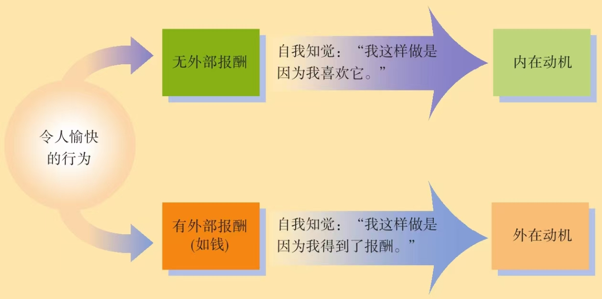
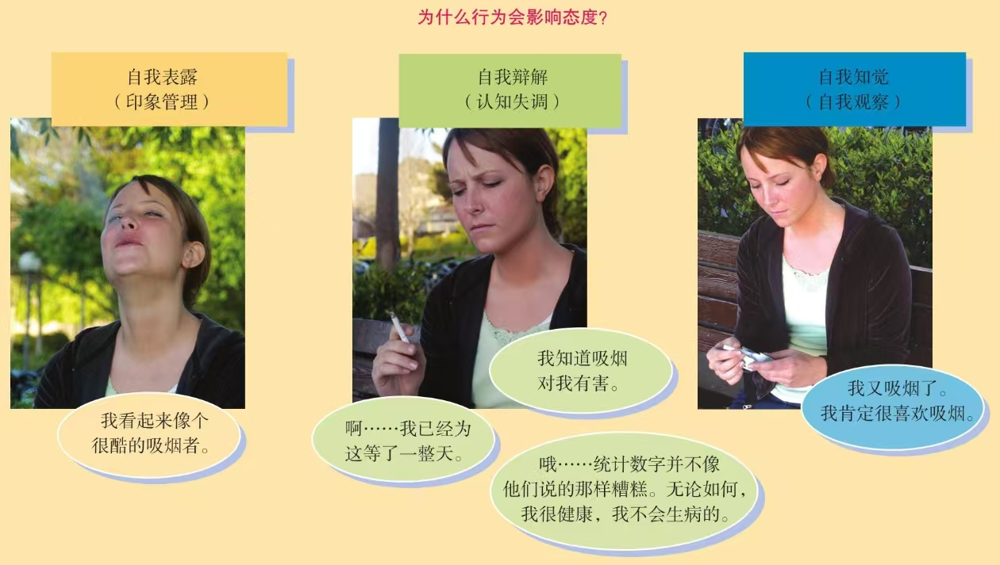

行为对态度的影响
Notes
社会心理学 第11版 第4章 态度与行为
一、 行为影响态度的证据
文章开篇通过几个生动的案例（如催眠、大脑电极刺激、裂脑患者实验）引出核心观点：人们会为自己的行为寻找合理的解释，从而改变自己的态度。随后，文章列举了多种行为影响态度的具体表现：
- 角色扮演 (Role-Playing):
- 当人们扮演一个新角色（如狱卒、囚犯、奴隶主、教师）时，最初可能感觉虚假，但随着时间推移，行为会逐渐内化，态度也随之改变。
- 斯坦福监狱实验是经典例证：大学生在扮演狱卒和囚犯几天后，就完全进入了角色，表现出与角色相符的残酷或崩溃行为，说明环境和角色对个体态度的强大塑造力。
- 奴隶制对奴隶主的影响：弗雷德里克·道格拉斯的回忆揭示了，长期扮演“主人”角色会腐蚀一个人的善良本性，使其变得残暴。
- 言语变成信念 (Saying Becomes Believing):
- 当人们为了取悦听众而说出与自己真实想法不符的观点时，如果缺乏外部借口（如被迫或受贿），他们往往会开始相信自己所说的话。
- 海曼的例子：他最初不相信手相术，但为了赚钱而假装相信，最终自己也信了。
- 实验证明，调整言语以迎合听众后，人们会更喜欢听众喜欢的人或事，并扭曲记忆以符合自己的言论。
- 登门槛现象 (Foot-in-the-Door Phenomenon):
- 先提出一个微不足道的请求（小要求），待对方答应后，再提出一个更大的请求，成功率会大大提高。
- 经典实验：先让居民在窗前放一个“安全驾驶”的小标志，两周后再请求在院子里放一个大而丑陋的标志，同意率远高于直接提出大请求。
- 原因是：一旦人们做出（即使是微小的）承诺，为了保持行为的一致性，他们会调整自己的态度，认为自己是一个“乐于助人”或“支持安全驾驶”的人，从而更愿意答应后续的更大请求。
- 邪恶行为与道德行为的塑造作用:
- 邪恶行为：一个微小的恶行（如说一个小谎）可能会引发更大的恶行，因为人们需要为自己的行为辩护，从而调整态度，认为自己的行为是正确的，甚至贬低受害者（“我们不仅伤害我们不喜欢的人，也变得不喜欢我们伤害的人”）。这解释了种族灭绝、战争暴行等如何逐步升级。
- 道德行为：相反，主动的、非强制的道德行为也会塑造积极态度。例如，帮助他人会增强对受助者的好感；为恋人祈祷会增加对恋人的承诺；本杰明·富兰克林通过让对手帮一个小忙，成功将其转化为朋友。
- 种族间的行为与态度:
- 立法强制的种族融合行为（如废除学校种族隔离）虽然最初可能不被所有人接受，但长期来看，这些行为会改变人们的种族态度，使支持率上升，歧视减少。这证明了“你无法为道德立法”的假设是错误的，行为可以间接影响态度。
二、 行为影响态度的原因：三种理论解释
文章接着探讨了行为为何能影响态度，介绍了三种主要理论：
- 自我表露理论 (Self-Presentation Theory):
- 人们为了在他人面前维持一致、正面的形象，会调整自己的态度以匹配自己的行为。这是一种印象管理策略，有时可能只是“假装”态度改变了。
- 认知失调理论 (Cognitive Dissonance Theory):
- 当我们的行为与态度不一致时，会产生一种心理上的不适感（失调）。为了减少这种不适，我们会改变态度来合理化自己的行为。
- 理由不足效应 (Insufficient Justification): 当行为缺乏强有力的外部理由（如高额报酬）时，失调感更强，因此人们更需要通过改变内在态度来为自己辩护。例如，在费斯廷格的实验中，只得到1美元报酬而说谎的学生，比得到20美元的学生更倾向于相信自己说的内容是真实的，因为他们缺乏“为钱说谎”这样的外部借口。
- 该理论强调了责任和选择的重要性：当人们认为行为是自愿且自己负责时，失调感最强，态度改变也最显著。
- 自我知觉理论 (Self-Perception Theory):
- 当我们的态度不明确时，我们会像观察他人一样观察自己的行为，并据此推断自己的真实态度。例如，如果我发现自己经常微笑，我可能会推断“我一定是个快乐的人”。
- 该理论能解释过度合理化效应 (Overjustification Effect)：当为一项本身有趣的事情提供外部报酬时，人们会将自己的行为归因于报酬（外在动机），从而削弱了原有的兴趣（内在动机）。例如，给喜欢画画的孩子报酬后，他们可能将画画视为换取报酬的工作，而非乐趣。
三、 理论比较与结论
- 认知失调理论更适用于解释当行为与已有的、明确的态度发生冲突时，人们为减少心理不适而进行的自我辩解。
- 自我知觉理论更适用于解释当态度本身模糊或尚未形成时，人们如何通过观察自己的行为来形成态度。
- 自我表露理论则解释了人们为了社会形象而进行的表面态度调整。

四、 后记与启示
文章最后强调，理解“行为影响态度”这一原理具有重要的实践意义。它告诉我们，改变自己并不总是从“想通”开始，而是可以从“行动”开始。通过主动采取期望的行为（如假装写作、强迫自己微笑、做出承诺），我们可以在不知不觉中改变自己的内在态度和习惯，实现自我成长。正如斯多噶派哲学家埃皮克提图所言：“要想养成某种习惯，那就去付诸行动。”